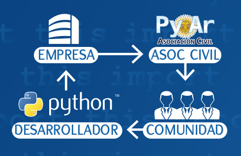

Índice
- Presentación
- Qué es Python
- Comunidad
- Corriendo e interpretando
- Tipos de datos
- Control de flujo
- Encapsulando código
- Asociación Civil
Prof. Leandro E. Colombo Viña
- Educación (2004):
Pío IX, IFTS18, CFP34, UDE, UOM, ... - Profesor de Programación (2010):
http://www.ifts18.edu.ar - Cooperativa de trabajo BITSON Ltda. (2014):
https://bitson.group
Prof. Leandro E. Colombo Viña
- Miembro de PyAR (2013):
https://python.org.ar - Asociación Civil Python Argentina (2015)
https://www.python.org.ar/wiki/AsociacionCivil - PyConAR 2016:
https://ar.pycon.org
Prof. Leandro E. Colombo Viña
- Técnico Superior en Informática Aplicada
- Profesor en Disciplinas Industriales
especialidad en Informática - Maestría en Gestión de Empresas TIC (en curso)
Qué es Python
Características
- Lenguaje de Programación
- Libre y gratis
- Maduro (>25)
- Fácil de aprender!
- Súper portable
Propiedades
- Compila a bytecode interpretado
- Tipado dinámico y fuerte
- Multiparadigma (pero no te obliga)
- Módulos, clases, funciones, generadores...
- Manejo de errores (traceback)
- Tipos de datos de alto nivel
- Intérprete interactivo
- Viene con las pilas incluídas!
Batteries not Included
- Servicios del OS
- Sockets
- Fecha y Hora
- Threads
- Bases de datos
- XML-RPC
- Regex
- SMTP
- Interfaz gráfica
- Unittest
- Logging
Y podemos agrandarlo!
- Bases de Datos: MySQL/MariaDB, PostgreSQL, MS-SQL, MongoDB, Redis...
- Interfaces Gráficas: Qt, Gtk, wxWidgets...
- Frameworks Web: Django, Flask, web2py, falcon, apistar...
- Y mucho más
- Pillow, para imágenes
- PyGame/Pilas: juegos
- Numpy: cálculos de alta performance
- Pandas: análisis de datos
- Keras: redes neuronales
Python Argentina
Comunidad
¿Quienes somos?
- Grupo de entusiastas de Python
Referencia local para la aplicación y difusión del lenguaje
¿Puedo participar?
Si! Ya lo estás haciendo! ;-)
python.org.ar Lista de Correos (+2000) IRC #pyar en Freenode @pythonargentina
PyAR es Federal
- Se organizan reuniones en otras provincias
- No hay que pedir permiso, sólo coordinarlas
PyAR es amor
(en hindi)
acción
Arrancando el Intérprete
$ python3
Python 3.6.5 (default, Apr 4 2018, 15:09:05)
[GCC 7.3.1 20180130 (Red Hat 7.3.1-2)] on linux
Type "help", "copyright", "credits" or "license" for more information.
>>>
Tipos de datos
Números
Enteros
>>> 2 + 2
4
>>> (50 - 5 * 6) / 4
5.0
>>> 7 / 2
3.5
>>> 7 % 3
1
>>> 23477 ** 13
658193818783243403439870082773641292484261074235533098117
Flotantes
>>> 3 * 3.75 / 1.5
7.5
>>> 7 / 2.3
3.0434782608695654
Complejos, decimales, fracciones
>>> (3-4j) ** 2.1
(-10.797386682316887-27.308377455385106j)
>>> Decimal(2).sqrt()
Decimal('1.414213562373095048801688724')
>>> Fraction(2, 3) ** 3
Fraction(8, 27)
Otras bases
>>> 0xf4
244
>>> 0b100010101
277
>>> hex(5566), bin(5566)
('0x15be', '0b1010110111110')
Cadenas
Apóstrofo o Comilla doble
Se definen con" o '
>>> 'Una cadena es una secuencia de caracteres'
'Una cadena es una secuencia de caracteres'
>>> "Ella dijo: 'sí'"
"Ella dijo: 'sí'"
>>> """Una línea
... y la otra"""
'Una línea\ny la otra'
Algunas operaciones
>>> "Hola" + " mundo"
'Hola mundo'
>>> "Eco " * 4
'Eco Eco Eco Eco '
>>> len("Hola mundo")
10
>>> "moño".encode("utf8")
b'mo\xc3\xb1o'
Accediendo cadenas por posición
>>> saludo = 'Hola mundo'
>>> saludo[0]
'H'
>>> saludo[3]
'a'
>>> saludo[-2]
'd'
Accediendo con rebanado (slicing)
>>> saludo[2:5]
'la '
>>> saludo[2:8]
'la mun'
>>> saludo[:4]
'Hola'
>>> saludo[-2:]
'do'
Listas
Corchetes
Se usan corchetes, guardan cualquier tipo de objeto
>>> a = ['harina', 100, 'huevos', 'manteca']
>>> a
['harina', 100, 'huevos', 'manteca']
Indexables
Se acceden por índice, como cualquier secuencia
>>> a[0]
'harina'
>>> a[-2:]
['huevos', 'manteca']
Operando
Concatenamos, reemplazamos
>>> a + ['oro', 9]
['harina', 100, 'huevos', 'manteca', 'oro', 9]
>>> a[0] = "sal"
>>> a
['sal', 100, 'huevos', 'manteca']
Cualquier objeto
Se pueden tener incluso listas
>>> a
['sal', 100, 'huevos', 'manteca']
>>> a[1] = ["Hola", 7]
>>> a
['sal', ['Hola', 7], 'huevos', 'manteca']
Borrando
Se pueden borrar elementos
>>> del a[1]
>>> a
['sal', 'huevos', 'manteca']
Extra!
Y hay mucho métodos
>>> a.index("huevos")
1
>>> a.sort()
>>> a
['huevos', 'manteca', 'sal']
Conjuntos
llaves
Se definen con llaves y escribiendo los valores
>>> nros = {1, 2, 1, 3, 1, 4, 1, 5}
>>> nros
set([1, 2, 3, 4, 5])
>>> otros = {4, 5, 6, 7}
>>> otros.update([6, 7, 8])
>>> otros
set([8, 4, 5, 6, 7])
Operaciones con conjuntos
>>> nros - otros
set([1, 2, 3])
>>> nros & otros
set([4, 5])
>>> nros | otros
set([1, 2, 3, 4, 5, 6, 7, 8])
Diccionarios
llaves, claves y valores
Se definen con llaves y escribiendo pares
>>> días = {"enero": 31, "junio": 30, "julio": 30}
>>> días
{'enero': 31, 'julio': 30, 'junio': 30}
>>> días["enero"]
31
>>> días["agosto"] = 31
>>> días["julio"] = 31
>>> días
{'agosto': 31, 'enero': 31, 'julio': 31, 'junio': 30}
>>> cualquiercosa = {34: [2, 3], (2, 3): {3: 4}}
borrando
>>> del días["julio"]
>>> días
{'agosto': 31, 'enero': 31, 'junio': 30}
Leyendo el diccionario
>>> "marzo" in días
False
>>> días.keys()
dict_keys(['enero', 'agosto', 'junio'])
>>> dias.values()
dict_values([31, 31, 30])
más métodos
>>> días.get("agosto", "No tenemos ese mes")
31
>>> días.get("mayo", "No tenemos ese mes")
'No tenemos ese mes'
>>> días.pop("agosto")
31
>>> días
{'enero': 31, 'junio': 30}
Control de flujo
Si pasa tal cosa...
a = ...
if a == 0:
print("Ojo con el valor de b")
b = 0
elif a > 100 or a < 0:
print("Error en el valor de a")
b = 0
else:
b = c / a
print(b)
Condicional
or,and,not==,!=,>,>=,<,<=in,is- Todo lo que evalúe:
TrueoFalse
Para cada uno...
>>> bichos = ["pulgas", "piojos", "cucarachas"]
>>> for bich in bichos:
... print("Mata-" + bich)
...
Mata-pulgas
Mata-piojos
Mata-cucarachas
Secuencia de números
>>> list(range(5))
[0, 1, 2, 3, 4]
>>> for i in range(2, 10, 3):
... print(i ** 2)
...
4
25
64
Mientras pase...
>>> a = 0
>>> while a < 1000:
... print(a ** 5)
... a += 3
0
243
7776
...
980159361278976
995009990004999
Extras
El while al igual que el for, tiene:
continue: Vuelve a empezar al principio del loopbreak: Corta el loop y saleelse: Lo ejecuta si no cortamos con el break
Errores
Excepciones
>>> 14 / 2
7.0
>>> 14 / 0
Traceback (most recent call last):
File "<stdin>", line 1, in <module>
ZeroDivisionError: division by zero
Podemos capturarlas
>>> try:
... print(14 / 0)
... except ZeroDivisionError:
... print("error!")
...
error!
Manejando excepciones
try: Acá va el bloque de código que queremos supervisar.except: Atrapa todo, o sólo lo que se le especifique.else: Si no hubo una excepción, se ejecuta esto.finally: Lo que esta acá se ejecuta siempre.
Generando excepciones
>>> raise ValueError("Acá contamos que pasó")
Traceback (most recent call last):
File "<stdin>", line 1, in <module>
ValueError: Acá contamos que pasó
Encapsulando código
Funciones
>>> def alcuadrado(n):
... res = n ** 2
... return res
...
>>> alcuadrado(3)
9
Las funciones, son objetos
>>> alcuadrado
<function alcuadrado at 0xb7c30b54>
>>> f = alcuadrado
>>> f(5)
25
Argumentos
>>> def func(a, b=0, c=7):
... return a, b, c
...
>>> func(1)
(1, 0, 7)
>>> func(1, 3)
(1, 3, 7)
>>> func(1, 3, 9)
(1, 3, 9)
>>> func(1, c=9)
(1, 0, 9)
>>> func(b=2, a=-3)
(-3, 2, 7)
Clases
>>> class MiClase:
... x = 3
... def f(self):
... return 'Hola mundo'
...
>>> c = MiClase()
>>> c.x
3
>>> c.f()
'Hola mundo'
Heredando
>>> class MiClase(ClasePadre):
>>> class MiClase(ClasePadre, ClaseTio):
Con mucha clase
>>> class Posicion:
... def __init__(self, x, y):
... self.x = x
... self.y = y
... def distancia(self):
... dist = math.sqrt(self.x ** 2 + self.y ** 2)
... return dist
...
>>>
>>> pos1 = Posicion(3, 4)
>>> pos1.x
3
>>> pos1.distancia()
5.0
>>> pos2 = Posicion(7, 9)
>>> pos2.y
9
>>> pos1.y
4
Módulos y Paquetes
Módulos
- archivos con código Python
- es un
.pysólo que importamos algo para usar - fácil, rápido y funciona!
- cuidado con los nombres
Importando
Si la clase anterior la tenemos en un pos.py
>>> import pos
>>> p = pos.Posicion(2, 3)
>>> p.x
2
Paquetes
- Cuando tenés muchos módulos
- Usando directorios y subdirectorios
__init__.py
Hay mucho más...
Asociación Civil
Herramienta/Interfaz

Próximos pasos
- Acercar a la gente
- Becas, especialmente en eventos chicos
- Capacitación en Python
- Descuentos en cursos
- Armar/coordinar cursos
- Infraestructura
- Virtual (sitio web, cartelera de trabajo, ...)
- Real (routers, micrófonos, ...)
Te necesitamos

Categorías
- Activos (Voz, Voto, Elegible para la CD): $200/mes
- Adherente (Voz): $75/mes
- Estudiante: $25/mes c/certificado
- Completá el formulario! http://bit.ly/socio-pyar
Benefactores
- Empresas, instituciones, etc.
- Socia benefactora
- Beneficios directos
https://ac.python.org.ar/
presidencia@ac.python.org.ar
http://bit.ly/socio-pyar

info@bitson.group
@lecovi
@bitsonArgentina